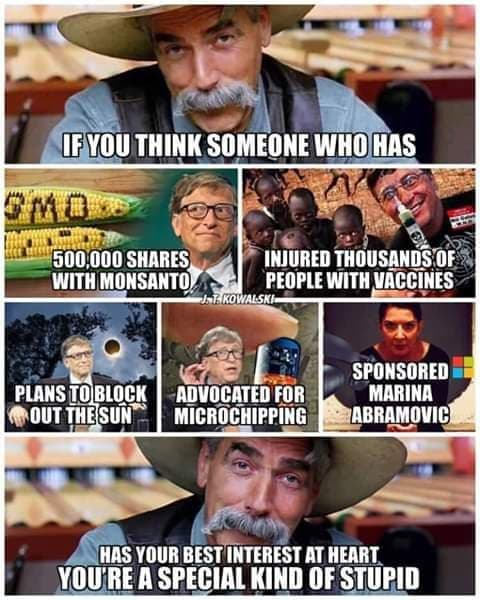

[caption id="attachment_4437" align="alignnone" width="320"]* Optical illusion of the old lady and young lady[/caption]
The basis we use for interpreting what is happening our world is through the understanding of our history. History heavily relies on narrative constructs.
The critical flaw with using narration as a tool to understand, encode and communicate what has transpired is it can only support data in a chronological order while reality is inherently chaotic, multi-linear, on occasions non-linear and confounds understanding thus narration. To tell a coherent tale of what has transpired, authors are forced to decide what to include and leave out of the narrative they weave. This phenomena is commonly labelled as the narrative fallacy.
Compound narrative fallacy with a collection of common human cognitive bias such as the framing bias, survivor bias, confirmation bias and consistency bias and you get a recipe for a fragmented society. This is especially more so when you have multiple equally plausible narratives that are diametrically opposed but draw evidences from the same chaotic sample space to reinforce their positions.
The task of deciphering what has transpired becomes even more daunting to the everyday individual with the reintermediation of social platforms as our primary news source. In the days prior, individuals need only rely on one official news source on how to understanding what is happening, usually from their government. Now, individuals are bombard on a daily basis with news sources sponsored by multiple parties with varying interest and agendas. In this day and age, it has become crucial for individuals to exercise critical thinking.
Some final food for thoughts:
- Iran is portrayed as an evil country in American media
- America is portrayed as the devils incarnate in Iranian media
- China is portrayed as an evil country in American media
- America is portrayed as an evil country in Chinese media
- Why is it that the winners are always as good and righteous in any battle?
- "If God's on our side, who the hell could be on theirs?" Private Reiben in Saving Private Ryan.
Thought provoking artifacts
Conflicting frames about Bills Gates
[caption id="attachment_4438" align="alignnone" width="480"] Bill Gates the evil person[/caption]
[caption id="attachment_4439" align="alignnone" width="900"] Bill and Melinda Gates the philanthropists[/caption]
Conflicting frames about the 2020 CoronaVirus
- [World wide governments' response to the coronavirus is more damaging to the economy than the actual impact of the corona virus](https://m.washingtontimes.com/news/2020/apr/14/coronavirus-case-and-death-counts-in-us-ridiculous/)
- [More people could die from the corona virus than the civil war](https://www.businessinsider.sg/coronavirus-death-statistics-americans-civil-war-2020-3?r=US&IR=T)
Conflicting frames about global warming
- [Skeptics arguments global warming is just one phase in an ongoing oscillating phenomena](https://science.howstuffworks.com/environmental/green-science/climate-skeptic.htm)
- [12 years left to save climate before it spins out of control](https://www.bbc.com/news/science-environment-48964736)
Related references:
- [*The psychology of *misjudgments*, Charlie Munger](https://www.youtube.com/watch?v=nVdlmXCNjG4)
- [*1984*, George Orwell](https://garyteh.com/2019/04/book-summary-george-orwells-1984/)
- [*Trust me I am lying*, Ryan Holiday](https://garyteh.com/2019/02/key-take-aways-from-trust-me-i-am-lying/)
- [*Mien Kampf*, Adolf Hitler](https://garyteh.com/2018/12/key-take-aways-from-mien-kampf-adolfo-hitler/)
- [*Third World perspective on press 14th April 1988*, Lee Kwan Yew](https://www.youtube.com/watch?v=RVlbyN-COTE)
- *["Ethos, Pathos, Logos" in Pragma, ](https://garyteh.com/2018/01/book-summary-pragma/)*[Sebastian Marshall](https://garyteh.com/2018/01/book-summary-pragma/)
- [*Zucked: Waking up to the Facebook Catastrophe*, Roger McNamee](https://www.amazon.com/dp/B07FC5BZYV/)
- *[Global media sentiment analysis engine](https://trends.getdata.io)*